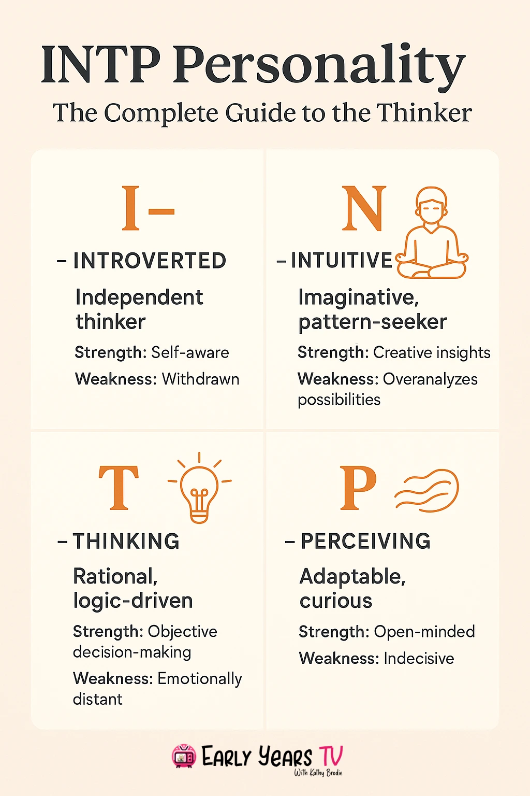

I demonstrate my intrapersonal intelligence through my ability and willingness to understand myself, reflect on my experiences, and recognize areas where I can improve. As an INTP, I tend to enjoy solitude, as being alone allows me to recharge, think freely, and explore my interests at my own pace. I also prefer working independently because it gives me greater control over my process and allows me to focus without the complications that sometimes come with group tasks.
Beyond understanding my personality, I actively explore ways to improve myself. I strive to make the most of every opportunity to develop my abilities, recognize my strengths and weaknesses, and use my talents more effectively. I am also interested in discovering strategies for building better habits and becoming more productive, including the ideas discussed in Atomic Habits by James Clear. By experimenting with different approaches to self-improvement, I hope to develop routines that help me grow both personally and intellectually. For me, intrapersonal intelligence is not simply about knowing who I am, but also about understanding who I can become and taking deliberate steps toward that potential.
